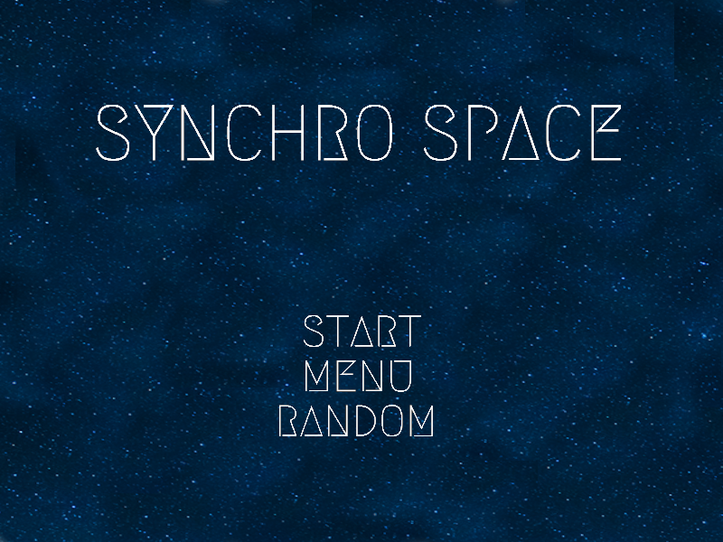
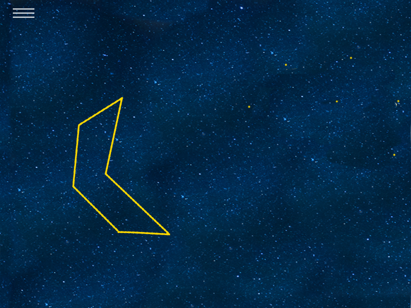

High Concept
Synchro Space is a matching game in space! Choose a constellation from the menu, and match its location in space. The closer you get to solving the puzzle, the more intense the surrounding area will become.
Genre
Synchro Space will be a puzzle game.
Platform
Currently, Synchro Space will be a desktop only game. However it is definitely possible to convert it to a mobile format.
Story
Synchro Space does not have a proper narrative, but rather focuses on the player interacting with the environment, and learning about various constellations. Players will find themselves wanting more challenging constellations to solve, which can be unlocked as you progress through the initial set of constellations.
Aesthetics
Graphics in this game will be a mix of photo-realistic and cartoonish. The background will have a photo-realistic space theme, while the constellations will have a more cartoonish look. Additionally, ambient music will be playing throughout the game. The music will get slightly louder or quieter depending on how close the player is to solving a puzzle.
Gameplay
Mechanics
The main mechanics of this game are moving and rotating a constellation to match its location in the sky. Once the player feels confident they have found the correct location, they can confirm to check if they were correct.
Controls
- Move constellation: WASD
- Rotate constellation counter-clockwise: Q
- Rotate constellation clockwise: E
- Confirm location: Space Bar
- Access Menu: M or Mouse click
New User Experience
The player will be taught how to play the game using the Controls. Once the controls are learned, the first few constellations will ease them into solving harder ones.
Player Learning
As the player completes more puzzles, they will learn how to identify certain patterns in the sky that relate to the constellation they are currently trying to solve. Audio and Visual cues will also be used to indicate how close or far the player is from solving a puzzle. The player can use these cues to their advantage when solving puzzles.
Screenshots
Title Screen - Start will start the game from the beginning, Menu lets the player choose a level, and Random picks a random level.
In Game screenshot - including a hamburger style menu button, an outline representing the constellation, and yellow dots representing where it needs to go.
About the Developer
My name is Aditya (Deetz) Gopinath, and I am a 5th year Computer Engineering Technology major at RIT. I enjoy playing video games, space, and learning about computers in general. While designing Synchro Space, my biggest inspiration came from playing the Mass Effect series, and more recently, Kingdom Hearts 3. In Mass Effect, I love exploring the galaxy map, finding resources, and learning about all the planets in the game. And in Kingdom Hearts 3, I really enjoyed finding the constellations scattered throughout the world. These two experiences gave me the idea for Synchro Space, a puzzle game that takes place in space!